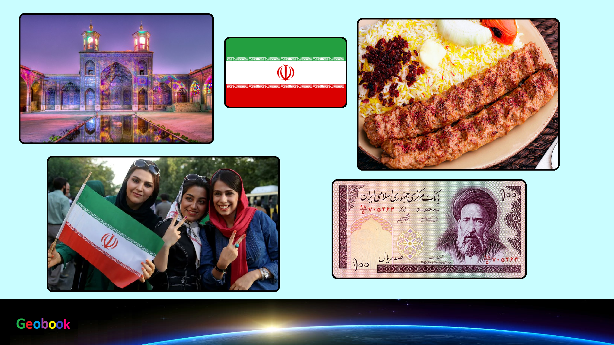

×

Iran
____
Традиционная еда
Фесенджа́н / Fesenjan — это утиное или куриное мясо в орехово-гранатном соусе.
Бадемджа́н / Bademjan — то что-то вроде овощного рагу. Благодаря обжаренным томатам блюдо имеет золотисто-красный оттенок. Главный ингредиент блюда – баклажаны, которые обжариваются в масле до золотисто-коричневого цвета, затем к ним добавляют помидоры и другие овощи, например, перец.
Багали полоу / Baghali Polo — это рис, приготовленный с укропом и бобами.
Зерешк полоу / Zereshk Polo — Иранцы очень любят кислый вкус. Барбарис – это как раз такой ингредиент, который добавляет блюду кислинку. В общем-то, плов из баранины с барбарисом – классическое восточное блюдо (вместо баранины может быть и другое мясо).

Горме Сабзи / Gormeh Sabzi — Приготовленный из баранины, фасоли и различных трав, темно-зеленый горме сабзи соответствует сразу двум персидским кулинарным предпочтениям: он кислый и с травами.
Аше рещте / Ash e Reshteh — Это блюдо представляет собой густой суп из фасоли с лапшой, шпинатом, листьями свеклы и другими пряными травами. Иногда перед подачей иранцы добавляют в суп молочный продукт, напоминающий кислый йогурт.
Тахдиг / Tahdig — С персидского языка название этого блюда переводится как «дно горшка», что напрямую связано с процессом приготовления. Когда иранцы готовят рис в горшке или котелке, то они его немного поджаривают, чтобы образовалась красивая золотистая корочка.
Кебаб / Kebab — это мясо со специями и солью, приготовленное на гриле.
____
